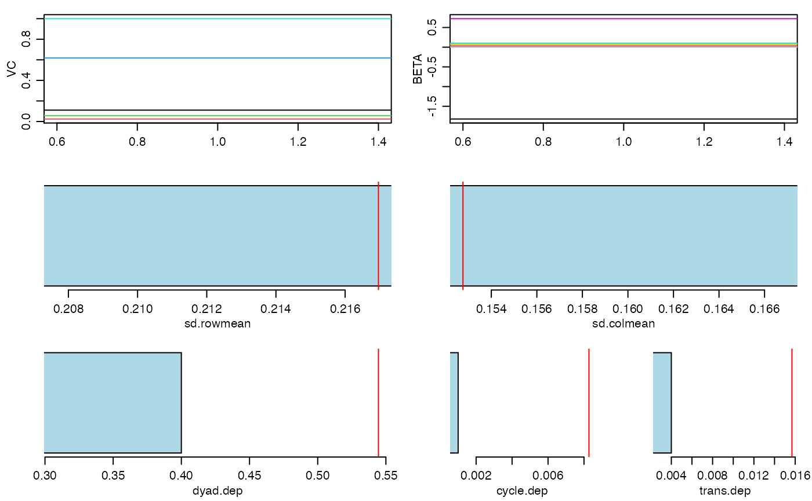
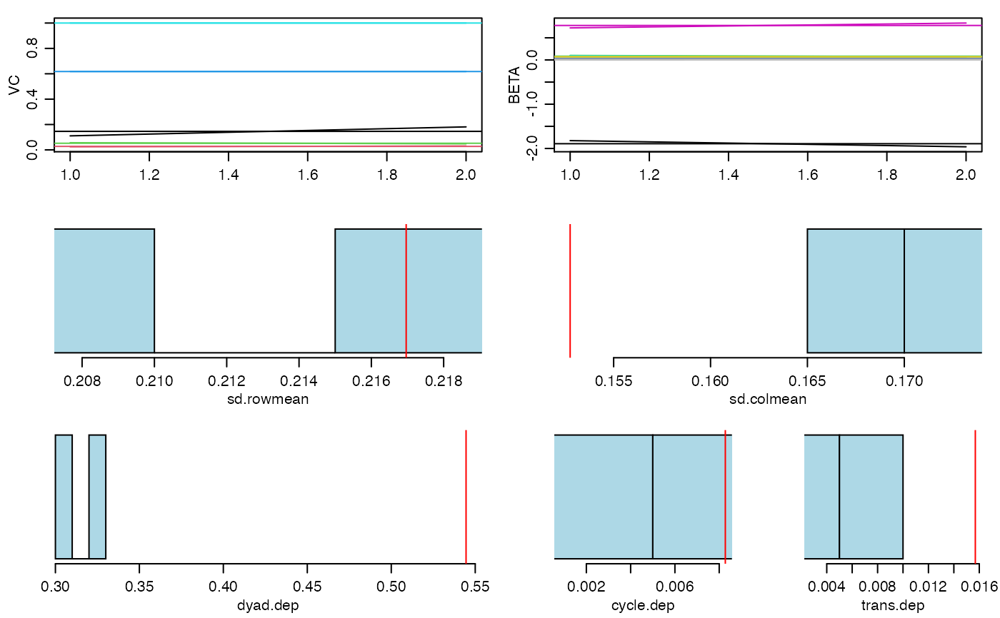
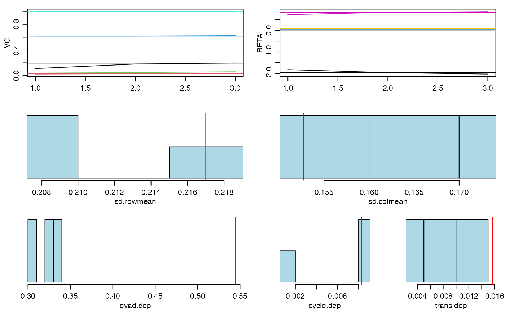
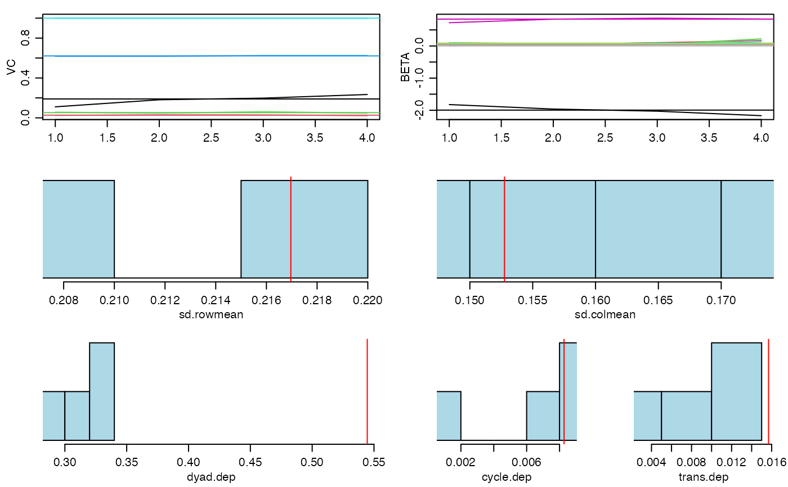
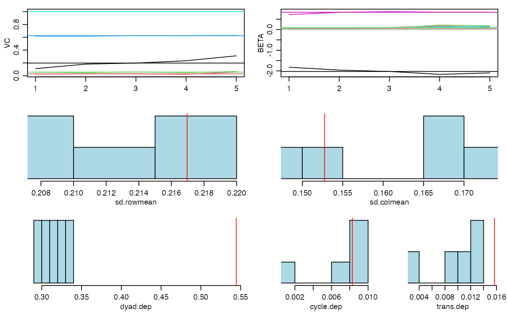

R/amen-package.R
amen-package.RdAnalysis of network and relational data using additive and multiplicative effects (AME) models. The basic model includes regression terms, the covariance structure of the social relations model (Warner, Kenny and Stoto (1979), Wong (1982)), and multiplicative factor effects (Hoff(2009)). Four different link functions accommodate different relational data structures, including binary/network data (bin), normal relational data (nrm), ordinal relational data (ord) and data from fixed-rank nomination schemes (frn). Several of these link functions are discussed in Hoff, Fosdick, Volfovsky and Stovel (2013). Development of this software was supported in part by NICHD grant R01HD067509.
| Package: | amen |
| Type: | Package |
| Version: | 1.4.4 |
| Date: | 2020-12-01 |
| License: | GPL-3 |
Peter Hoff, Bailey Fosdick, Alex Volfovsky, Yanjun He
Maintainer: Peter Hoff <peter.hoff@duke.edu>
#> 20 pct burnin complete #> 40 pct burnin complete #> 60 pct burnin complete #> 80 pct burnin complete #> 100 pct burnin complete #> 6 -1.82 0.03 0.1 0.01 0.1 0.72 0.07 0.01 : 0.11 0.02 0.06 0.62 1#> 7 -1.89 0.04 0.09 0.03 0.07 0.78 0.07 0.02 : 0.15 0.03 0.05 0.62 1#> 8 -1.94 0.06 0.07 0.05 0.07 0.81 0.07 0.03 : 0.16 0.03 0.06 0.62 1#> 9 -2 0.09 0.11 0.06 0.08 0.82 0.07 0.03 : 0.18 0.03 0.05 0.62 1 #> 4 4 4 4 4 4 4 4#> 10 -2.02 0.1 0.13 0.06 0.1 0.82 0.07 0.03 : 0.21 0.03 0.06 0.62 1 #> 5 5 5 5 5 5 5 5#> Length Class Mode #> BETA 40 -none- numeric #> VC 25 -none- numeric #> APM 100 -none- numeric #> BPM 100 -none- numeric #> U 0 -none- numeric #> V 0 -none- numeric #> UVPM 10000 -none- numeric #> EZ 10000 -none- numeric #> YPM 10000 -none- numeric #> GOF 30 -none- numeric#> Error in xy.coords(x, y, xlabel, ylabel, log): 'x' is a list, but does not have components 'x' and 'y'